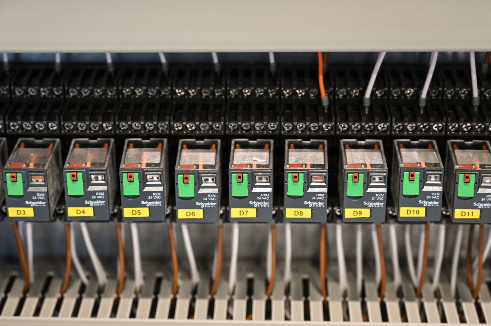
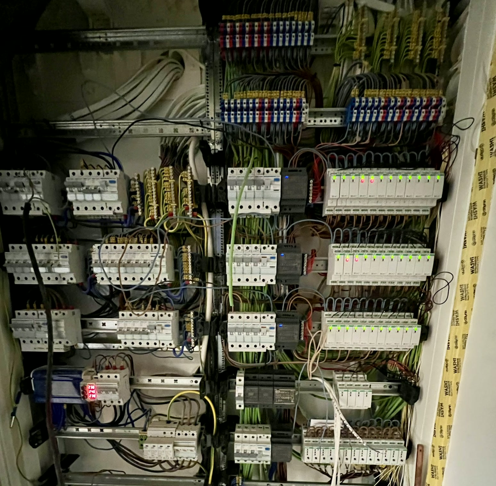
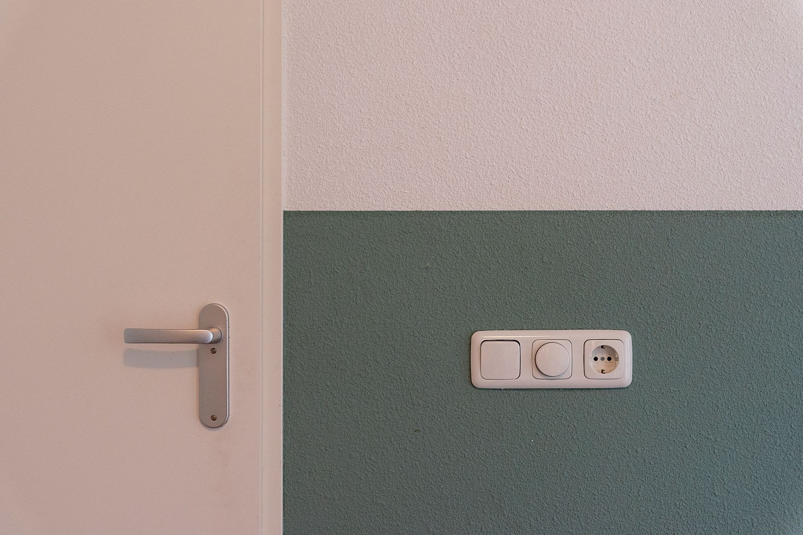
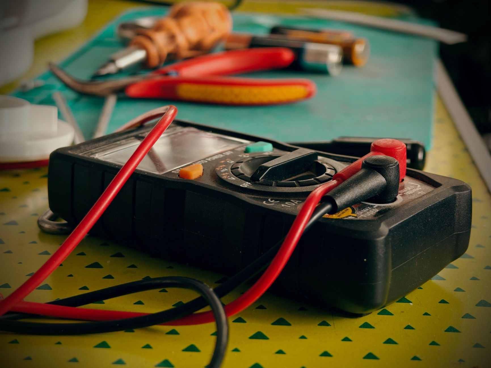

Strona głównaOferta
Instalacje, automatykai zabezpieczenia.
Od wymiany gniazdka po szafę sterowniczą. Szczecin, Stargard, Police, Goleniów, Gryfino i okolice. Każde zlecenie zaczynamy od rozmowy i ceny ustalonej z góry.

Awariei usterki.
Nagle zgasła połowa mieszkania? Bezpiecznik wybija po włączeniu czajnika? Sprawdzamy obwód po obwodzie, znajdujemy miejsce, gdzie przewód się przepalił albo zacisk poluzował, i usuwamy przyczynę. Nie podnosimy bezpiecznika „na próbę”. Zanim wyjdziemy, mierzymy wszystko jeszcze raz, pod obciążeniem.
- Brak prądu w części domu
- Wybijające zabezpieczenia
- Grzejące się gniazdka i przewody

Instalacjeelektryczne.
Budujesz dom albo robisz generalny remont? Rozprowadzamy instalację od tablicy po ostatnie gniazdko: obwody, bruzdy, puszki, a na koniec pomiary z protokołem, zanim cokolwiek zniknie pod tynkiem. Punkty ustawiamy razem przy ścianie, nie na szkicu, żeby gniazdka były tam, gdzie stanie łóżko i telewizor.
- Domy, mieszkania i obiekty firmowe
- Wymiana starej instalacji
- Obwody pod płytę indukcyjną i AGD

Rozdzielnicei zabezpieczenia.
Dokładamy różnicówki i ochronniki przepięciowe do starszych tablic. Różnicówka odcina prąd, zanim zrobi krzywdę człowiekowi, ochronnik zbiera przepięcie po burzy, zanim dojdzie do sprzętu. Obie rzeczy razem kosztują mniej niż jeden spalony telewizor.
- Wyłączniki różnicowoprądowe
- Ochronniki przepięciowe
- Opisane obwody w tablicy

Oświetleniei LED.
Zakładamy taśmy LED pod szafkami, wzdłuż schodów i w sufitach, wieszamy lampy i żyrandole. Robimy też sterowanie światłem: ściemniacze, czujniki zmierzchu, oświetlenie schodowe na czas. Bez kombinowania na siłę: wszystko obsługuje się zwykłym pstryczkiem, bez aplikacji i bez instrukcji.
- Taśmy i profile LED
- Lampy, plafony i żyrandole
- Sterowanie i czujniki

Gniazdka, włącznikii osprzęt.
Grzejące się gniazdko albo włącznik, który łapie co drugi raz, to poluzowany zacisk. Od tego zaczynają się nadpalone puszki. Wymieniamy osprzęt razem z połączeniem, nie samą obudowę. Równo, w poziomie, na dokręconych zaciskach.
- Wymiana gniazdek i włączników
- Nowe punkty tam, gdzie ich brakuje
- Podłączenie płyty i sprzętu AGD

Pomiaryi protokoły.
Do odbioru domu, do ubezpieczyciela po szkodzie, do wynajmu: wszędzie tam potrzebny jest protokół z pomiarów, nie „działa, sprawdzałem”. Mierzymy, wypisujemy i podpisujemy. Jedna wizyta, dokument na lata.
- Pomiary przy odbiorze
- Protokół dla ubezpieczyciela
- Dokument z podpisem

Automatykai sterowanie.
Sterowanie oświetleniem i ogrzewaniem, automatyka bram, układy czasowe i czujniki. W domach składamy rozdzielnice z modułami sterowania, w obiektach firmowych całe szafy z aparaturą. Obwody opisujemy, żeby po latach było wiadomo, co czym steruje.
- Sterowanie oświetleniem i ogrzewaniem
- Automatyka bram
- Szafy sterownicze
Dodatkowo
Monitoring, alarmyi anteny.
Oprócz instalacji zakładamy systemy, które pilnują domu i firmy. Zakres i sprzęt ustalamy przy oględzinach.
Monitoring CCTV
Kamery przy domu, firmie i posesji.
Systemy alarmowe
Czujki, centrala i sygnalizatory.
Sygnalizacja pożarowa (SAP)
Instalacje w obiektach firmowych.
Anteny Sat / RTV
Montaż i okablowanie anten.
Kontakt
Która usługaCię interesuje?
Opowiedz, co trzeba zrobić. Podpowiemy rozwiązanie i podamy cenę przed robotą.